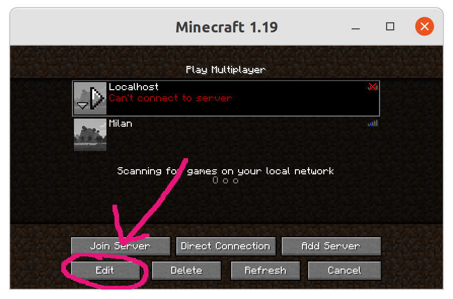
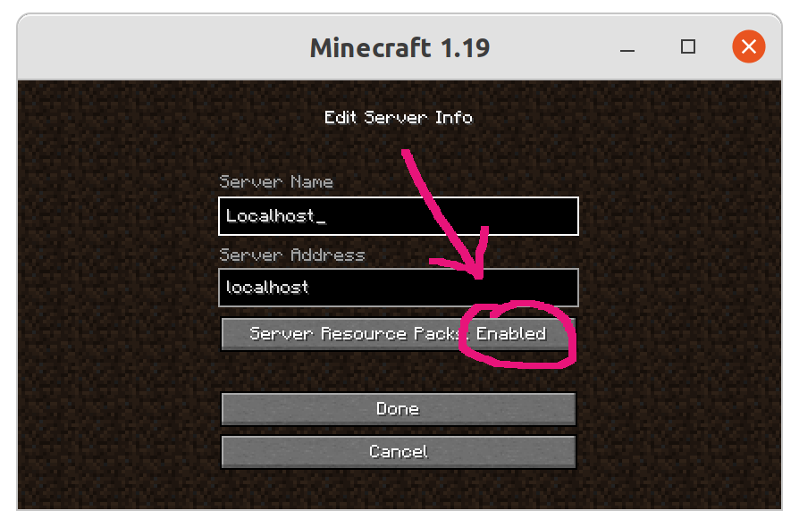

You're probably visiting this page because a server kicked you because 'you' rejected their server resource pack. Except that... you didn't reject anything. If this is the case for you, your minecraft settings are probably rejecting all server resource packs automatically, without asking anything to you. The following 2 screenshots show how you can change these settings:
 To avoid this problem, make sure that server resource packs for the server you're visiting are either Enabled or Prompt, preferably Enabled.